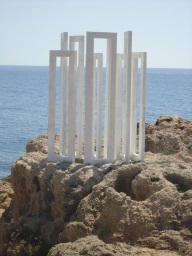
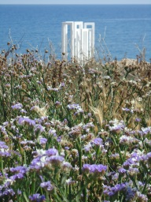
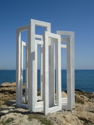

Art Paphos, April 2016
Paphos, Cyprus
|
Η Δ’ ΑΡΑ ΚΥΠΡΟΝ ΙΚΑΝΕ ΦΙΛΟΜΜΕΙΔΗΣ ΑΦΡΟΔΙΤΗ, ΕΣ ΠΑΦΟΝ, ΕΝΘΑ ΤΕ ΟΙ ΤΕΜΕΝΟΣ ΒΩΜΟΣ ΤΕ ΘΥΗΕΙΣ. ΟΜΗΡΟΥ ΟΔΥΣΣΕΙΑ θ 362-3 |
The laughter-loving Aphrodite went to Cyprus, to Paphos, where is her precincts and fragrant altar. Homer’s Odyssey 8.362-3 |
|||
|  |
 |
 | ||
|
... ΤΗΝ Δ’ ΑΦΡΟΔΙΤΗΝ ΚΙΚΛΗΣΚΟΥΣΙ ΘΕΟΙ ΤΕ ΚΑΙ ΑΝΕΡΕΣ, ΟΥΝΕΚ’ ΕΝ ΑΦΡΩΙ ΘΡΕΦΗ, ..., ΚΥΠΡΟΓΕΝΕΑ Δ’, ΟΤΙ ΓΕΝΤΟ ΠΕΡΙΚΛΥΣΤΩΙ ΕΝΙ ΚΥΠΡΩΙ. ΗΣΙΟΔΟΥ ΘΕΟΓΟΝΙΑ 195-9 |
Gods and men call her ‘Aphrodite’, because she grew amid the foam, ..., and ‘Cyprogenes’, because she was born in sea-girt Cyprus. Hesiod’s Theogony 195-9 |
|||
|
Όψεις απεραντοσύνης Με τις αυστηρές, κάθετες γραμμές της να αντιπαρατίθενται στην οριζόντια, ελεύθερη ροή των κυμάτων, η μαρμάρινη εγκατάσταση εισέρχεται σ’ ένα συναρπαστικό παιγνίδι ανάμεσα στους όγκους, τα διάκενα και τις ποικίλες όψεις του φυσικού και του αρχιτεκτονικού περιβάλλοντος, της θάλασσας και της πόλης. Οι γεωμετρικές της φόρμες ορθώνονται σαν ανοιγμένα παράθυρα που μας καλούν σε μια περιστροφική και κυβιστική θέαση των πραγμάτων, όπου το μεσαιωνικό κάστρο σμίγει με τα σύγχρονα κτήρια στο βάθος, όπου το παρελθόν συναντά το παρόν, οι πολιτισμοί της ανατολής συνενώνονται μ’ αυτούς της δύσης, οι μνήμες του χθες διοχετεύονται στα βιώματα του σήμερα και τις προσδοκίες του αύριο .Καθώς πλαισιώνεται στα πολλαπλά ανοίγματα, η γαλάζια απεραντοσύνη της θάλασσας και τ’ ουρανού, απολήγει λειτουργικό μέρος του έργου που διαχέει στην πόλη μια θωπευτική κι αναζωογονητική αύρα ανάτασης κι αισιοδοξίας. Εμπερικλείοντας την υπερκόσμια και θεία ομορφιά του ορίζοντα, το γλυπτό, τοποθετημένο επάνω στα βράχια καθώς αναδιπλώνεται ρυθμικά σε άμεση γειτνίαση με το νερό, ανακαλεί αρχαίο ναό αφιερωμένο στην Κύπριδα Αφροδίτη. Δρ. Νάτια Αναξαγόρου |
Views of Infinity With its austere, vertical lines juxtaposed to the horizontal, free flow of the waves, the marble installation enters into a fascinating play between the volumes, the voids, and the various views of the natural and the architectural environment, the sea and the city. Its geometric forms stand up like open windows, inviting us to a circular and cubist sight of things, where the medieval castle merges with the contemporary buildings in the background, the past unites with the present, eastern and western civilizations blend, memories of yester years mingle with current experiences and future expectations. Framed within the multiple openings, the cerulean infinity of the sea and the sky becomes a functional part of the work, diffusing to the city a caressing and invigorating breeze of exhilaration and optimism. Encapsulating the sublime and celestial beauty of the horizon, the sculpture, placed upon the rocks and rhythmically delineated in a position adjacent to the water, recalls an ancient temple dedicated to Kypris Aphrodite. Dr. Nadia Anaxagorou |
|||